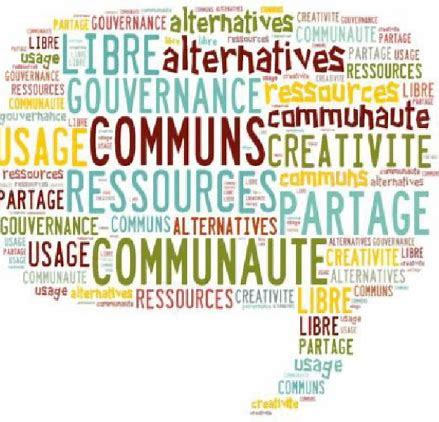
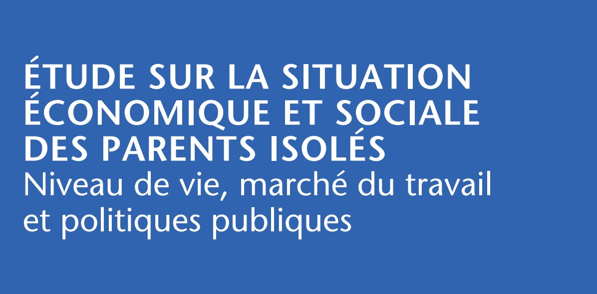
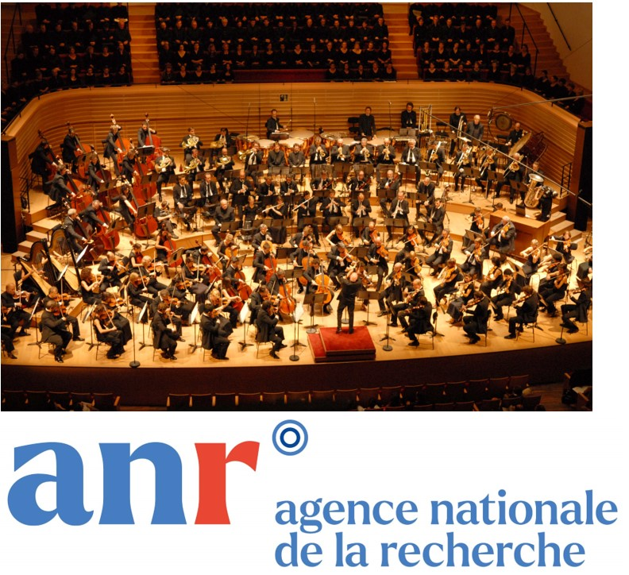
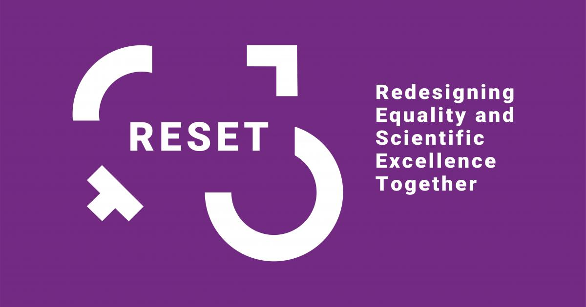
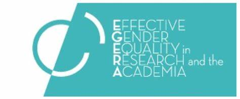

Ici la description des projets de recherche les importants dans lesquels je suis impliquée :

Analyse bibliométrique de la littérature croisant genre et communs
Etude sur le Genre et Analyse Longitudinale des Entrées à l’ENA

Etude sur la situation socio-économique des parents isolés

Projet de Recherche sur les Orchestres, les DIscriminations et le GEnre -> ANR project

Redesigning Equality and Scientific Excellence Together
Supporting the Promotion of Equality in Research and Academia

Effective Gender Equality in Research and the Academia
The Rationale of Motherhood Choices : Influence of employment and public policies